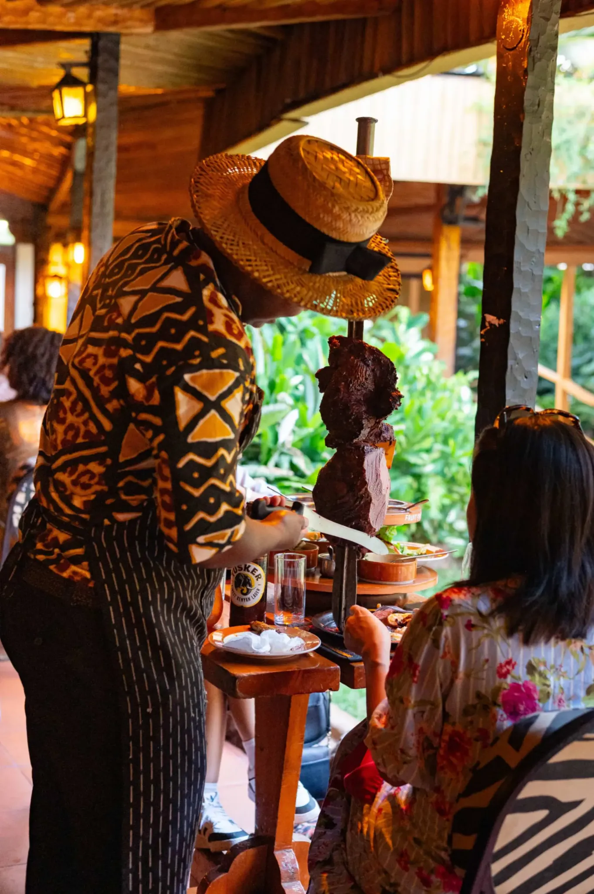
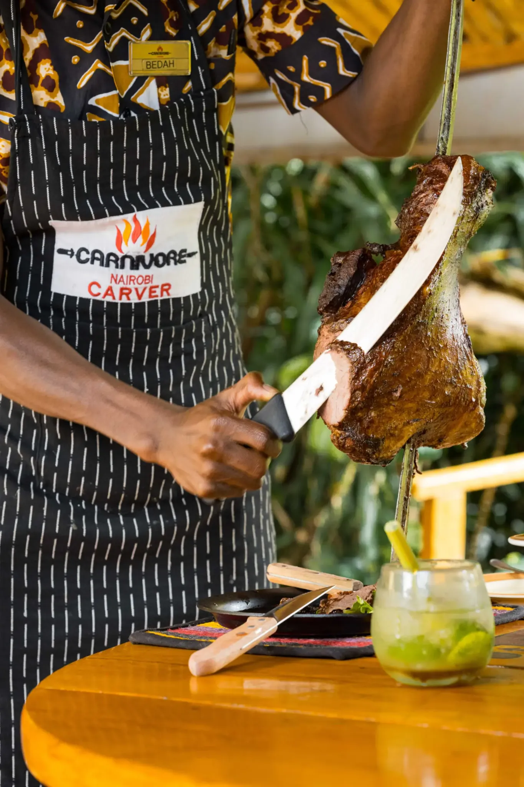
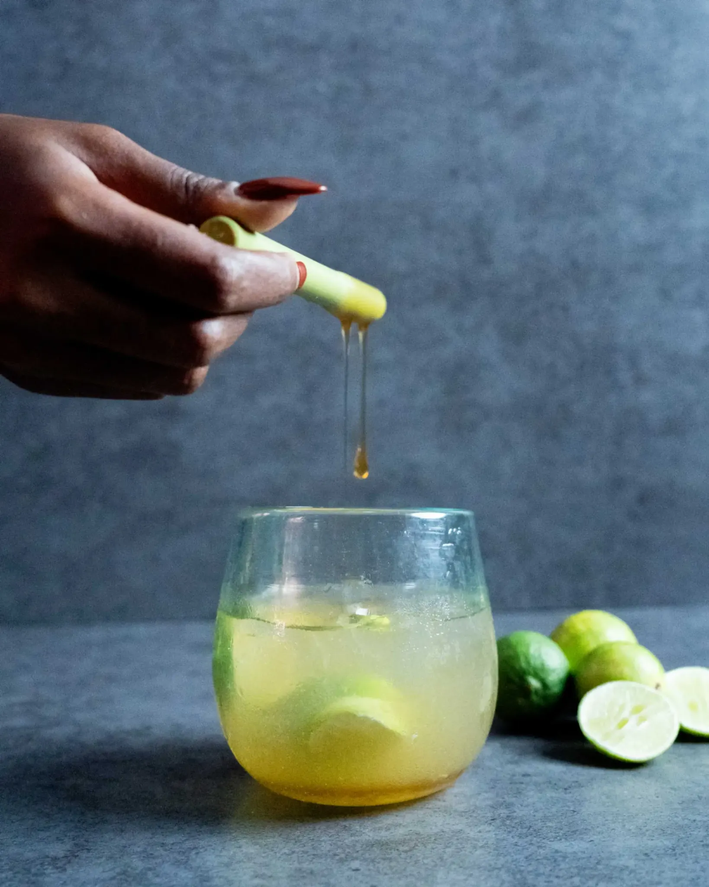

Charcoal-grilled meats
The signature carvery
Roasted over a huge charcoal pit and carved directly onto sizzling plates.



Nairobi · Since 1980
A legendary Kenyan dining ritual where meats are roasted over charcoal, carried on traditional swords and carved at your table until you lower the white flag.
Fire · Carving · Celebration · Nairobi
The ultimate Beast of a Feast
The charcoal pit dominates the entrance. Swords arrive laden with roasted cuts. Carvers move from table to table, serving until the white flag is lowered.
The setting is rustic, theatrical and unmistakably Kenyan—a meeting point between rural warmth and medieval banquet energy.
How the ritual unfolds
The feast opens with a warm first course before the fire takes over.
Beef, lamb, pork, poultry and game meats are presented and sliced tableside.
The service continues until you declare defeat.
Rump steak. Lamb. Pork ribs. Chicken yakitori. Crocodile. Ostrich. Beef ribs. Turkey.
One fixed-price feast. One unforgettable Nairobi experience.The feast
Roasted over a huge charcoal pit and carved directly onto sizzling plates.

Honey, fresh lime and vodka prepared with its own unmistakable ceremony.
Every cut arrives with movement, anticipation and a little spectacle.
Guest stories
“A truly distinctive and unforgettable dining experience. The meat, atmosphere and tableside service made the evening feel like a performance.”
— International guest
Before you arrive
The Beast of a Feast: an all-you-can-eat experience featuring meats roasted over charcoal on traditional swords and carved tableside.
Yes. Carnivore offers a dedicated Herbivore and Piscivore menu alongside the main carvery.
Reservations are strongly recommended for weekends, holidays and group occasions.
Yes. Families are welcome, with children’s pricing available.
Reserve your table
Daily service for lunch and dinner on Lang’ata Road, Nairobi.